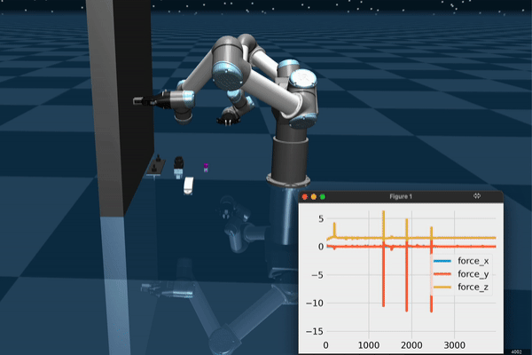
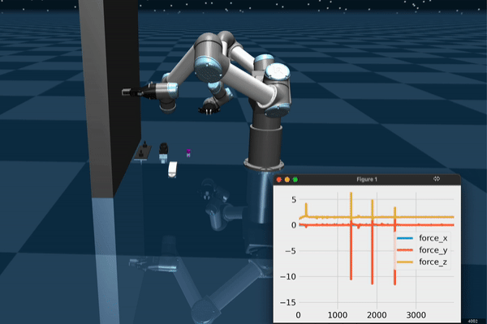

Abstract
Amidst the wide popularity of imitation learning algorithms in robotics, their properties regarding hyperparameter sensitivity, ease of training, data efficiency, and performance have not been well-studied in high-precision industry-inspired environments. In this work, we demonstrate the limitations and benefits of prominent imitation learning approaches and analyze their capabilities regarding these properties. We evaluate each algorithm on a complex bimanual manipulation task involving an over-constrained dynamics system in a setting involving multiple contacts between the manipulated object and the environment. While we find that imitation learning is well suited to solve such complex tasks, not all algorithms are equal in terms of handling environmental and hyperparameter perturbations, training requirements, performance, and ease of use. We investigate the influence of these key characteristics by employing a carefully designed experimental procedure and learning environment.

Related Material (IRL Control)
The codebase inherits many features from IRL Control, which features:
- Low-level Controllers including Operational Space Control and Admittance Control.
- Demo Collection with PS Move controllers and 3D Connexion Space Mouse for teleoperation.
- Configuration Files for tuning PID Gains, min/max velocities, and adding kinematic descriptions of the robot devices.
 


BibTeX
@article{drolet2024,
title={A Comparison of Imitation Learning Algorithms for Bimanual Manipulation},
author={TODO}
}